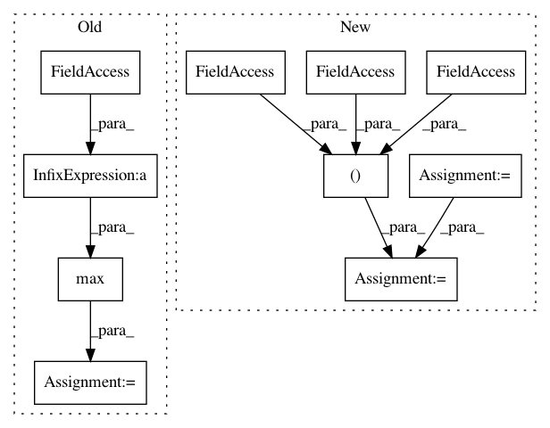

1b781f694884d17874706dd1a51a36e08240c8c1,tests/depthwise_conv2d.py,,,#,33
Before Change
pytorch_output = output.data.numpy()
keras_output = k_model.predict(input_np)
error = np.max(pytorch_output - keras_output)
print(error)
if max_error < error:
max_error = error
After Change
max_error = error
// This isn"t a depthwise convolution, so shouldn"t be detected as such
non_dw_model = TestConv2dNonDepthwise(inp)
output = non_dw_model(input_var)
k_model = pytorch_to_keras(non_dw_model, input_var, (inp, inp, inp,), verbose=True)
check_error(output, k_model, input_np)
print("Max error: {0}".format(max_error))
In pattern: SUPERPATTERN
Frequency: 3
Non-data size: 10
Instances
Project Name: nerox8664/pytorch2keras
Commit Name: 1b781f694884d17874706dd1a51a36e08240c8c1
Time: 2018-09-05
Author: sean@wayve.ai
File Name: tests/depthwise_conv2d.py
Class Name:
Method Name:
Project Name: UFAL-DSG/tgen
Commit Name: 357d1611c7a222b55a5b4f2b3399bde14a9ac0ea
Time: 2015-05-27
Author: odusek@ufal.mff.cuni.cz
File Name: tgen/nn.py
Class Name: MaxPool1DLayer
Method Name: connect
Project Name: UFAL-DSG/tgen
Commit Name: 930f22933523259b1a152dc3174312357fb99fb9
Time: 2015-06-15
Author: odusek@ufal.mff.cuni.cz
File Name: tgen/nn.py
Class Name: MaxPool1DLayer
Method Name: connect
Project Name: nerox8664/pytorch2keras
Commit Name: 1b781f694884d17874706dd1a51a36e08240c8c1
Time: 2018-09-05
Author: sean@wayve.ai
File Name: tests/depthwise_conv2d.py
Class Name:
Method Name: